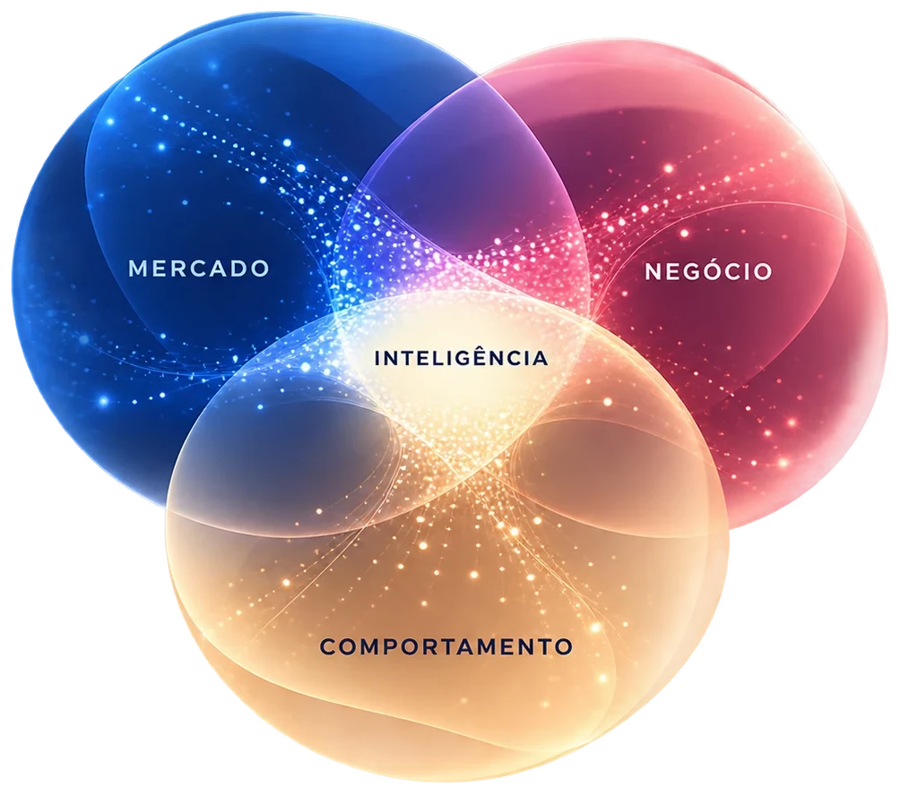

O marketing aprendeu a medir o consumidor melhor do que aprendeu a entendê-lo.
Os números dizem que a pessoa comprou (ou não), eles não dizem por quê. Quando o dashboard melhora e o negócio não, investir mais em mídia nem sempre é a decisão certa.
A Meridiem recoloca comportamento dentro da conta: ajuda a entender por que os números se movem e o que fazer a partir disso.
O relatório pergunta
- Qual campanha performou melhor
- Qual canal deu mais retorno
- Qual produto vendeu mais
- Quanto caiu a conversão
- Quanto subiu o custo por clique
A Meridiem acrescenta
- O que motivou o comportamento
- Que barreira bloqueou a resposta
- Que informação chegou tarde demais
- Que mudança de mercado desviou a demanda
- Se isso se repete ou depende de uma condição específica
Mercado, negócio e comportamento
A Meridiem Inc. conecta os três para transformar informação em decisões de crescimento. A inteligência nasce do cruzamento, nunca de uma camada isolada.

Mercado
Como o setor funciona de verdade
Players, mudanças recentes, sazonalidade direta e indireta, indústrias marginais e onde a categoria dói hoje.
Negócio
História, canais e restrições reais
O que funcionou, o que falhou, o que nunca foi testado e a capacidade instalada para executar.
Comportamento
Inclui quem não comprou
Quem comparou e desistiu, abandonou o carrinho ou pesquisou e sumiu. A jornada não é uma linha reta: a pessoa descobre em um ambiente, valida em outro e volta atrás.
Nenhuma recomendação nasce direto de um sinal
São oito etapas, da informação à ação. O ciclo volta ao começo quando um novo sinal muda a leitura.
Ler
- Informação
- Leitura
- Diagnóstico
O que está acontecendo e quais as causas. Metas, dores e diagnósticos iniciais são hipóteses a validar.
Definir
- Oportunidades
- Índice de Viabilidade
- Priorização
O que faz sentido fazer primeiro.
Agir
- Decisão
- Execução
Por você, por fornecedores atuais ou por parceiros. A medição devolve o ciclo ao começo.
Regra 1A disciplina segue o problema.
Regra 2Recomendação sem viabilidade não vale nada.
Regra 3A rota muda quando o sinal muda.
Método cria consistência, e experiência cria discernimento. A IA amplia a capacidade de processamento, e pessoas definem direção, critérios e decisão.
Oportunidade não é prioridade
“Capacidade demonstrada pesa mais do que capacidade declarada.”
Índice de Viabilidade
Ordena o que fazer primeiro e o que construir para os próximos ciclos.
- Mede a maturidade instalada: orçamento, equipe, tecnologia, dados, prazo, parceiros, liderança e mensuração
- Cruza esse levantamento com cada solução: esforço de execução × viabilidade
- Começa por ganhos rápidos com o que já existe
- Termina nos projetos estruturantes, com caminho construído
Índice de Esforço
Mede a dificuldade de vender cada produto.
- Cruza demanda de mercado com histórico de venda
- Separa o que vende por demanda orgânica do que só anda com mídia
- Entra como camada extra sobre a curva ABC
- Mostra o potencial de cada item se vender sozinho
Onde está a sua empresa na prateleira digital?
Prateleira digital é a posição que a sua empresa ocupa no ambiente digital para vender, dentro ou fora do varejo. É a entrega máxima da Meridiem, e duas lentes decidem essa posição.
Digital Discoverability
Define se você está nela
Onde você precisa estar, e o quanto está preparado para ser descoberto ali.
- Presença
- Cobertura
- Encontrabilidade
- Posicionamento
- Estrutura
Digital Activation
Define como você compete
Como agir nesses lugares gerando o resultado desejado.
- Visibilidade
- Atenção
- Compreensão
- Relevância
- Experiência
- Interação
- Desejo
- Conversão
- Crescimento
Onde ela existe
Busca, social, marketplace, IA: onde alguém descobre, pesquisa, compara, recebe recomendação, avalia reputação, converte ou volta. Nenhum canal pertence a uma lente só. O mesmo Google resolve problemas diferentes conforme a intenção da ação.
O que o método vira na prática
Produtos de inteligência: entregas concretas para ler o mercado, ler a demanda e decidir o que fazer primeiro.
Leitura de mercado
- Brief de Inteligência, janela de 30 dias
- Mapa de Tendências
- Indústrias Marginais
- Cases e Insights
- Onde Dói
Leitura de demanda
- Demanda de Produto
- Sazonalidade Direta e Indireta
- Mapa de Buscas
- Jornada de Descoberta, passiva e ativa
- Índice de Esforço
Decisão
- Digital Discoverability e Activation
- Prateleira Digital
- Plano de Ação Priorizado
Os produtos materializam o método e não definem a empresa. O portfólio segue em construção.
Quem decide, quem executa, quem distribui
Dados sobram, e clareza falta. Todo clique é uma pessoa real do outro lado da tela. Do outro lado da mesa, estão três perfis.
Dono ou C-level de PME
Varejo, e-commerce, tech, educação, entretenimento
Decide o orçamento. Sente a operação fragmentada na pele e quer resultado no P&L, não mais um relatório de mídia.
Gestor de mídia ou growth
Time interno de marketing e performance
Executa no dia a dia. Precisa de diagnóstico rápido e alavancas priorizadas, não de mais um dashboard para olhar.
Agência independente
Parceiro de distribuição, em white label ou com a marca Meridiem
Busca uma camada de inteligência para competir com as grandes sem inchar o time nem perder a relação com o cliente.
Projeto ou Parceria Contínua
Nos dois formatos, você recebe um mapa de soluções priorizado pelo Índice de Viabilidade e o detalhe tático de como implementar cada solução.
Projeto
Começo, meio e fim. A Meridiem analisa, propõe as soluções e entrega o mapa. Você executa.
- Valor de entrada maior
- Custo total menor no médio e longo prazo
Parceria Contínua
A relação se estende. A Meridiem acompanha a execução pelo prazo combinado, ajuda a desenvolver a sua equipe e a buscar fornecedores, ou a conversar com os que você já tem.
- Custo diluído ao longo do contrato
- Acompanhamento da implementação
Pool de parceiros, nos dois modelos
- Mídia
- CRM
- SEO
- Dados
- Criação
- Desenvolvimento
- Social